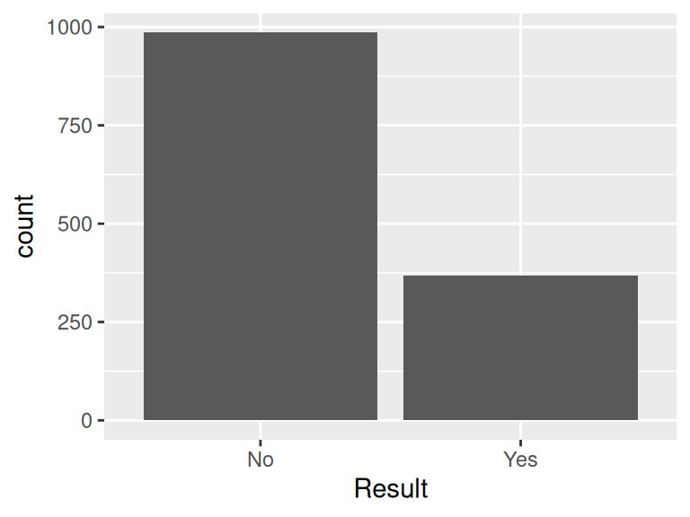
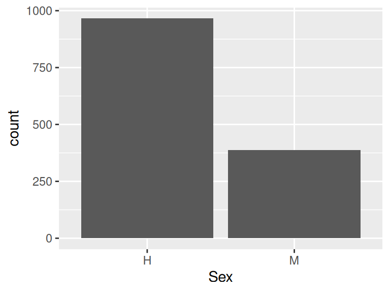
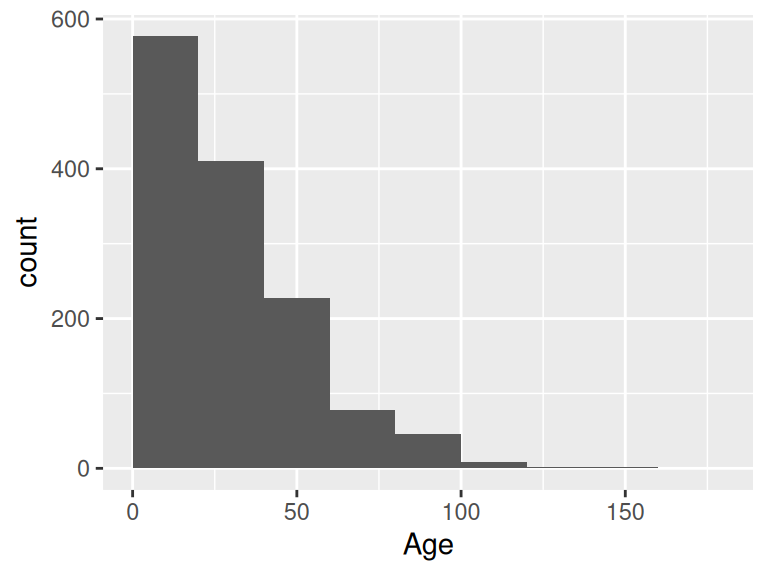
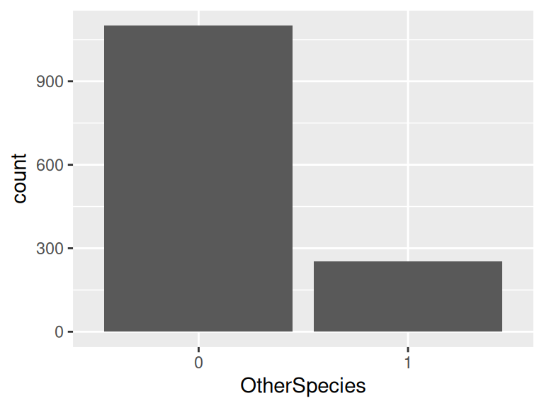
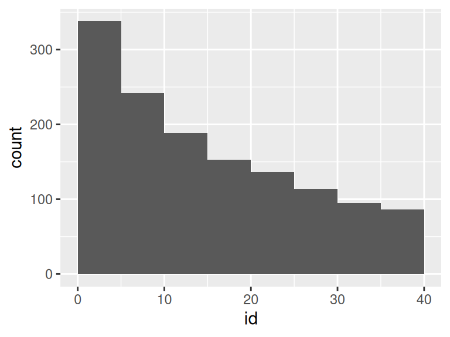
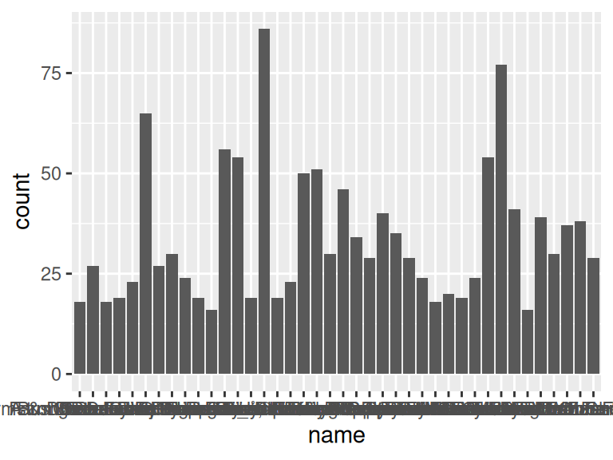
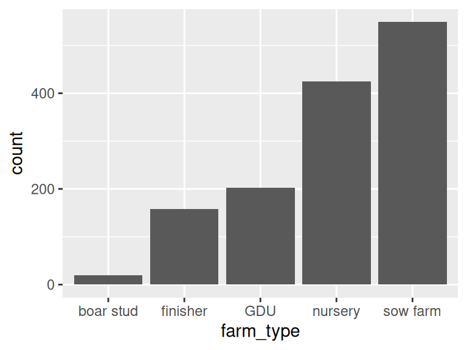
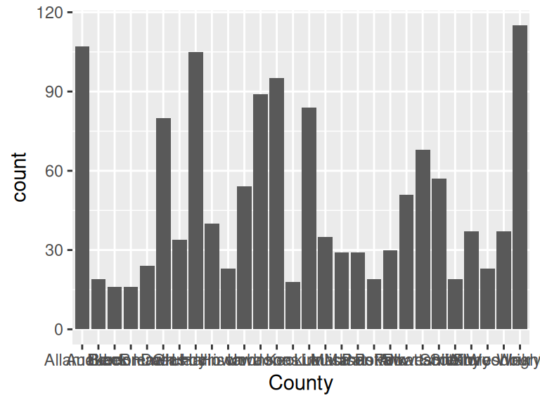

PRRS
Autogenerated data summary from dataReporter
Data report overview
The dataset examined has the following dimensions:
| Feature | Result |
|---|---|
| Number of observations | 1353 |
| Number of variables | 8 |
Checks performed
The following variable checks were performed, depending on the data type of each variable:
| character | factor | labelled | haven labelled | numeric | integer | logical | Date | |
|---|---|---|---|---|---|---|---|---|
| Identify miscoded missing values | \(\times\) | \(\times\) | \(\times\) | \(\times\) | \(\times\) | \(\times\) | \(\times\) | |
| Identify prefixed and suffixed whitespace | \(\times\) | \(\times\) | \(\times\) | \(\times\) | ||||
| Identify levels with < 6 obs. | \(\times\) | \(\times\) | \(\times\) | \(\times\) | ||||
| Identify case issues | \(\times\) | \(\times\) | \(\times\) | \(\times\) | ||||
| Identify misclassified numeric or integer variables | \(\times\) | \(\times\) | \(\times\) | \(\times\) | ||||
| Identify outliers | \(\times\) | \(\times\) | \(\times\) |
Please note that all numerical values in the following have been rounded to 2 decimals.
Summary table
| Variable class | # unique values | Missing observations | Any problems? | |
|---|---|---|---|---|
| Result | character | 2 | 0.00 % | |
| Sex | character | 2 | 0.00 % | |
| Age | numeric | 83 | 0.00 % | \(\times\) |
| OtherSpecies | numeric | 2 | 0.00 % | |
| id | numeric | 40 | 0.00 % | |
| name | character | 40 | 0.00 % | |
| farm_type | character | 5 | 0.00 % | |
| County | character | 28 | 0.00 % |
Variable list
Result
| Feature | Result |
|---|---|
| Variable type | character |
| Number of missing obs. | 0 (0 %) |
| Number of unique values | 2 |
| Mode | “No” |
Sex
| Feature | Result |
|---|---|
| Variable type | character |
| Number of missing obs. | 0 (0 %) |
| Number of unique values | 2 |
| Mode | “H” |

Age
| Feature | Result |
|---|---|
| Variable type | numeric |
| Number of missing obs. | 0 (0 %) |
| Number of unique values | 83 |
| Median | 24 |
| 1st and 3rd quartiles | 14; 46 |
| Min. and max. | 6; 180 |

- Note that the following possible outlier values were detected: "180".
OtherSpecies
- Note that this variable is treated as a factor variable below, as it only takes a few unique values.
| Feature | Result |
|---|---|
| Variable type | numeric |
| Number of missing obs. | 0 (0 %) |
| Number of unique values | 2 |
| Mode | “0” |
| Reference category | 0 |

id
| Feature | Result |
|---|---|
| Variable type | numeric |
| Number of missing obs. | 0 (0 %) |
| Number of unique values | 40 |
| Median | 13 |
| 1st and 3rd quartiles | 6; 24 |
| Min. and max. | 1; 40 |

name
| Feature | Result |
|---|---|
| Variable type | character |
| Number of missing obs. | 0 (0 %) |
| Number of unique values | 40 |
| Mode | “Iowa Select Farms Inc” |

farm_type
| Feature | Result |
|---|---|
| Variable type | character |
| Number of missing obs. | 0 (0 %) |
| Number of unique values | 5 |
| Mode | “sow farm” |

County
| Feature | Result |
|---|---|
| Variable type | character |
| Number of missing obs. | 0 (0 %) |
| Number of unique values | 28 |
| Mode | “Wright” |

Report generation information:
Created by: Gilles Guillot (username:
g.guillot).Report creation time: Tue Jul 22 2025 16:21:03
Report was run from directory:
C:/Users/g.guillot/OneDrive - World Organisation For Animal Health/Data Science - Documents/Data Science Training 2025/Training_Session_1dataReporter v1.0.5 [Pkg: 2025-04-13 from CRAN (R 4.5.1)]
R version 4.5.1 (2025-06-13 ucrt).
Platform: x86_64-w64-mingw32/x64(Europe/Berlin).
Function call:
makeDataReport(data = .)